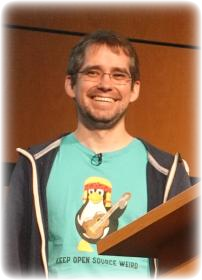

Progress for unprivileged containers
Over the past few years, there has been quite a bit of progress in various kernel features that can be used to create containers without requiring privileges. Most of the containers these days run as root, which means that a vulnerability leading to an escape from the container can result in system compromise. Stéphane Graber gave a talk at the 2022 Linux Security Summit Europe (LSS EU) to fill in some of the details of work that he and others have been doing to run containers as unprivileged code.
The talk was slated to have two speakers, as Christian Brauner had planned to co-present; unfortunately, Brauner got caught up in the travel woes that plagued Dublin around the time of the conference and was at the airport waiting for his plane home at the time of the talk. The presentation was something of a follow-up to their talk on system-call interception for unprivileged containers at LSS North America back in June. Graber is the project lead for the LXC and LXD container projects, which we recently looked at; Brauner is a kernel developer and one of the LXC/LXD maintainers.
User namespaces
The title of the talk was "What's new in the user namespace", but the content was a fair bit more wide-ranging. Graber began with a quick introduction to user namespaces, which were added to the kernel in 2013 by Eric Biederman; they are "getting fairly close to a decade old at this point". In a nutshell, a user namespace allows a process and its descendants to map user IDs (UIDs) and group IDs (GIDs) inside the namespace to different values in the real Linux system hosting the namespace (i.e. the "root namespace"). So a namespace can have a UID 0, thus look and act like the root user inside the namespace, which is actually mapped to an unprivileged ID on the system.

Regular users can create their own user namespace and map their own UID/GID to the root user inside the namespace; anything more complicated requires the use of a privileged helper program to map ranges of IDs for the namespace. This is analogous to a network namespace, he said, which has no network devices when it is created and needs a privileged helper to create (most) network devices inside the unprivileged network namespace. He did a quick demo showing the creation of user namespace with the unshare command, which used the -r option to map his UID to root inside of the namespace.
Normally, though, a container will need more than the single-ID mapping as in that example. POSIX really wants to have 64K UIDs and GIDs available to it and there needs to be a "nobody" user and "nogroup" group so that things work as expected; it is usual to map a whole range of 64K IDs into a user namespace, he said. In addition, containers will likely want additional namespaces, including mount, process ID (PID), UTS (mostly for a separate hostname), network, and control group (cgroup) namespaces. Some mixing and matching of namespace types may make sense, depending on the use case for the container.
As noted, by using a privileged helper (or, of course, setting up the namespaces as root) the user namespace can be made to map many IDs, up to the entirety of the host system's ID range. A namespace could be created that effectively has no map because it maps every host ID to an ID in the namespace, but that is not a good idea. "You should never ever map the real UID 0 to anything" inside a user namespace.
The UID 0 inside of a namespace looks like it has all of the privileges of the root user, but that is not really true, of course, at least with respect to the host system. All of the Linux capabilities will be granted to that root user inside the namespace, for example, but they are not effective for the host system. The is_capable() kernel capabilities check will only use the host-mapped UID to determine capabilities; the is_ns_capable() will instead report the capabilities as seen within the namespace.
If there are going to be multiple containers running on the same host, it provides better security to map each to its own set of 64K IDs, he said. That way, if there are resource constraints being applied to a specific host ID, a container cannot cause a denial of service for a different container that is sharing that host ID. Graber demonstrated creating two containers with non-overlapping IDs using LXC.
Filesystem woes
While the IDs are mapped inside of the namespace, the filesystem has a rather different view of things; it uses the host IDs both for permission checking and for writing IDs for file ownership. This is a longstanding problem for user namespaces with real (rather than virtual) filesystems. Some filesystems, such as tmpfs or FUSE, that are mounted inside a mount and user namespace combination do actually use the mapped IDs, but there is still a problem accessing existing filesystems written with different IDs. Sharing filesystems among multiple containers is also difficult.
The first attempt to fix the problem was shiftfs ("occasionally we forget the 'f', the first one", he said with a grin). It was created by James Bottomley and then picked up by Graber's team at Canonical; it was not merged for the mainline but it still ships in some Ubuntu versions because the mainline solution (next up in the talk) is not available for all filesystems of interest yet. Shiftfs functions much like an overlay filesystem that allows remapping of UIDs and GIDs. It has a number of problems, he said, especially in handling filesystem-specific ioctl() commands and in its interactions with various virtual-filesystem (VFS) layer caches; those problems clearly show that the shiftfs approach was "not the right way to do it".
The proper way to fix this problem is with ID-mapped mounts, which was developed by Brauner, Graber said. Most of the feature is implemented in the VFS layer, but individual filesystems do need to change to support it; currently, ext4, XFS, Btrfs, VFAT, F2FS, overlayfs, and probably a few other filesystems support it. ZFS and Ceph are both pending as well, but there is no support for any network filesystems at this point. ID-mapped mounts solve the problem cleanly, at the VFS layer, so the edge cases where shiftfs had trouble are smoothly handled.
New namespaces
Graber said that he had spent the previous few days at the Linux Plumbers Conference (LPC) and in its Kernel Summit track; he learned some more about upcoming new namespaces. There is a trend that new namespaces not be developed as full-blown namespaces with their own flag to clone(), but to hang them off of the user namespace instead. They become features that can be enabled for a given user namespace, which is simpler to implement and use, he said.
The first of those is the Integrity Measurement Architecture (IMA) namespace, which has been a work in progress for some time now; version 14 of its patch set was posted the morning of the talk. It will allow IMA to be used within containers, so that every file that is used in the container can be measured to ensure its integrity. Different namespaces can then have different IMA policies as well.
The other new namespace is the tracing namespace that was described by Mathieu Desnoyers at LPC, Graber said. It will allow running some of the tracing tooling inside of containers, which will be pretty useful but will be "interesting" to implement. It will be difficult to make it safe to use, so it is the kind of feature that will likely need to grow over time; some simple things will be allowed at the beginning and others will be added slowly.
Shifting gears again, Graber said that there are questions in the community about how to restrict the user namespace feature. It has been around for nearly a decade and the bugs that have been found of late are not in the user namespace code, rather they are elsewhere in the kernel and were only exposed by the feature, but it is still an increase in the attack surface. So people are looking for ways to restrict its use.
There is the "big hammer" of not compiling the feature into the kernel, but that is not really viable these days since more and more applications are using user namespaces. There are resource limits that can be placed on the number of user namespaces that can be created, but it is a system-wide setting, not per-user or per-process. Similarly, a seccomp() filter could be used to restrict the system calls that can be made, but seccomp() cannot filter based on the pointer arguments to clone3() so that technique is not really workable either. Various distributions have added their own control via sysctl but those are not in the mainline.
There has been some work to add a security-module hook for user-namespace creation, which would give SELinux and other modules a way to pass judgment on the operation. That approach makes sense to the Linux security module (LSM) community and others, but Biederman, who is the namespace maintainer, does not agree. He does not want to see more restrictions added for user namespaces, but perhaps he can be convinced, Graber said, or a more generic mechanism can pass muster. He would like to see distributions and others have more fine-grained control over the use of user namespaces so he hopes the problem will get resolved soon.
He spent a bit of time going over the system-call interception work that he and Brauner presented at LSS NA. The general idea is that they have a privileged process that mediates privileged system calls for containers by way of seccomp(). Some of the operations they would like to enable that way sound "scary", like kernel-module and BPF-program loading, or mounting filesystems, but the intent is to only perform those operations on trusted resources.
A trusted resource is one that the host system trusts because it knows that the contents have not been modified by untrusted users. For example, a specific netfilter kernel module might be requested by a container, so the container manager would inspect the module to see that it is one of the trusted ones. The module that gets passed by the container "would absolutely not be loaded", but the manager could load the host's copy of the module that the container has requested if it is on a list of trusted modules.
In conclusion, Graber said that the introduction ID-mapped mounts is a "game changer" for the adoption of user name spaces and containers. For years, the lack of that feature has meant that Docker and Kubernetes containers generally have to be privileged containers; since those make up the vast majority of containers, the use of unprivileged containers has been tiny. But as the ID-mapped mounts feature becomes available, the problems for IDs on Docker-style layered filesystems will fade, so there is hope for more unprivileged container use down the road. "Maybe in another decade more, no one will use privileged containers anymore ... maybe".
He also thinks that the new model for namespaces that are part of the user namespace makes a lot of sense. It helps reduce the review burden and should allow for more interesting namespaces to be added. The seccomp() system-call interception is exciting as well, since it will allow working around some of the limitations that exist for unprivileged containers. The future is bright it would seem.
[I would like to thank LWN subscribers for supporting my travel to Dublin
for the Linux Security Summit Europe.]
| Index entries for this article | |
|---|---|
| Security | Containers |
| Conference | Linux Security Summit Europe/2022 |
Posted Sep 29, 2022 11:25 UTC (Thu)
by jhoblitt (subscriber, #77733)
[Link] (4 responses)
Posted Sep 29, 2022 14:00 UTC (Thu)
by kupson (guest, #83860)
[Link] (3 responses)
Posted Sep 29, 2022 14:41 UTC (Thu)
by jhoblitt (subscriber, #77733)
[Link]
I experimented with docker userns support ~3 years ago for CI jobs, trying to work around the infamous filesystem uid/gid mapping problem. The subuid / subgid mechanism was fairly awkward, didn't work for non-sequentual ids, and was not a good fit for dynamic jobs.
Posted Sep 29, 2022 17:47 UTC (Thu)
by stgraber (subscriber, #57367)
[Link] (1 responses)
I suspect most Kubernetes containers will show the usual:
First column is container UID, second is host UID, third is the number of UIDs being mapped.
In an unprivileged container, it looks more like:
Meaning that you have 1000000000 UIDs being mapped into the container with the container's uid 0 set to be host uid 1000000. So the real uid 0 is not available in the container at all.
Posted Oct 1, 2022 1:19 UTC (Sat)
by rcampos (subscriber, #59737)
[Link]
If you enable user namespaces, you can never be mapped to UID 0 on the host
Posted Sep 29, 2022 12:43 UTC (Thu)
by MortenSickel (subscriber, #3238)
[Link] (2 responses)
And I would like to thank you again for another great writeup from one of the Linux conferences. Worth every cent!
Posted Sep 29, 2022 13:19 UTC (Thu)
by bredelings (subscriber, #53082)
[Link] (1 responses)
One of the issues with rootless CRIU was being able to choose the PID of the restored process, which would seem to be fine inside a container...
Posted Sep 29, 2022 17:49 UTC (Thu)
by stgraber (subscriber, #57367)
[Link]
There's been a fair amount of work done around that by IBM and others, trying to get unprivileged processes like a complex JVM to be dumped and restored, without requiring root privileges.
Posted Sep 29, 2022 14:19 UTC (Thu)
by cortana (subscriber, #24596)
[Link] (2 responses)
If you're using RHEL or Fedora then each container will get a unique SELinux label, so even if a non-root UID breaks out of the container namespace, it can still only interfere with processes with the same label (i.e., that are part of its container) and not the processes of other containers or of the host.
The labels look like system_u:system_r:container_t:s0:c224,c282 where the MCS categories on the end are chosen to be unique for each container.
The same mechanism is also used to secure libvirt VMs from one another, even though they're all running as the same qemu user.
Posted Sep 29, 2022 14:36 UTC (Thu)
by cortana (subscriber, #24596)
[Link]
Uh, sorry, the confinement applies even if a process is running as root in the host uid namespace (i.e., if the container doesn't use a separate uid namespace at all). root confined as system_u:system_r:container_t:s0:c224,c282 is no more privileged than any other UID (in the absence of kernel bugs of course).
Posted Sep 29, 2022 17:51 UTC (Thu)
by stgraber (subscriber, #57367)
[Link]
However there is more to it than just accessing someone else's resources.
Having UID 1000 in two containers map back to the same host UID, means that some in-kernel counters and limits will be incorrectly merged together. That's been an issue with things like ulimits in the past where a container could set a limit on a given uid which would then also be imposed to the processes running in another container.
This would then allow for some pretty trivial DoS which process labeling or security profiles won't help you with.
Posted Sep 29, 2022 14:31 UTC (Thu)
by cortana (subscriber, #24596)
[Link] (3 responses)
I wonder why it's always necessary to map 2^16 UIDs into each container. Most containers will be running processes all as the same UID, and most container images will only include files owned by a handful of UIDs.
So quay.io/centos/centos:7 only requires 3 UIDs to be allocated to be unpacked. So couldn't the container runtime map 1023 host UIDs into the first 1023 UIDs within the container, plus one more for 65534? This would be compatible with the majority of container images, which take a base image, add a user, and then create files owned by that user.
In such a container, attempting to create a file or changing a process' UID to one of the unmapped UIDs could return an error.
We'd then be able to fit many more than 64k containers into our precious limited UID space. I expect there's some bit of POSIX that makes this more difficult than it seems?
Posted Sep 29, 2022 17:55 UTC (Thu)
by stgraber (subscriber, #57367)
[Link]
In many cases, you can get away with pretty much just 0 (root), 1000 (user), 65534 (nobody).
It's a bit trickier for what we do with LXD as we run full distribution images. Those commonly have anywhere between 20 and 50 users in place already for a variety of system services, shared paths, ... and more importantly as such containers are effectively used like physical systems or VMs, we have no idea what extra packages may do, or what some Ansible playbook may be adding later on.
For those, we've found our default of mapping a contiguous 65536 per container to work pretty well as it's somewhat rare for anything to need uid/gid above that range. Exceptions to that rule are systems using network authentication (often in the 200000-500000 range) and more recently, tools like systemd and snapd allocating ephemeral uid/gid for services, often using very very high uid/gid for that.
Posted Oct 1, 2022 1:35 UTC (Sat)
by rcampos (subscriber, #59737)
[Link] (1 responses)
You know they will work and the limit of unique mappings is 65k containers per node (UID space is 32 bits, so 2^32= 2^16 * 2^16), which doesn't seem like a problem.
Sure, you can squeeze it later too if you need it. But if you want as much people as possible to adopt it, why would you create possible barriers to optimize something you don't really need (more than 64k containers per node)?
If you don't use a fixed mapping width, then you have to deal with fragmentation of UIDs, which is not fun.
And if you use a fixed mapping but shorter, then you have to analyze images, guess a mapping that works for most images (this is a heuristic, and by definition you possibly leave people out), take into account that if the naptping doesn't use the SAME containers IDs for ALL the images, then sharing volumes will be problematic. It can be more problematic if people use LDAP to build some container images too, etc.
So, in the end, doesn't seem worth it to optimize this at this point.
It might be needed in the future? It MIGHT, if we need more than 64k pods in a node. When that comes, we can easily create a new mode that only maps a shorter mapping and apps can migrate to that.
For now, IMHO, it is not worth it.
Posted Oct 2, 2022 12:52 UTC (Sun)
by cortana (subscriber, #24596)
[Link]
Progress for unprivileged containers
Progress for unprivileged containers
The later is any container that have container uid 0 mapped to host uid 0. If I remember correctly the user namespaces in K8S are still experimental.
Progress for unprivileged containers
Progress for unprivileged containers
0 0 4294967295
In this case, it means root on the host is root in the container and the maximum of 4294967295 are mapped.
0 1000000 1000000000
Progress for unprivileged containers
Progress for unprivileged containers
Progress for unprivileged containers
Progress for unprivileged containers
The user namespace certainly allows for a bunch of the APIs needed, from PID control to finer grained control over the network.
Progress for unprivileged containers
If there are going to be multiple containers running on the same host, it provides better security to map each to its own set of 64K IDs, he said. That way, if there are resource constraints being applied to a specific host ID, a container cannot cause a denial of service for a different container that is sharing that host ID.
Progress for unprivileged containers
Progress for unprivileged containers
Progress for unprivileged containers
$ podman run --rm quay.io/centos/centos:7 find / -xdev -printf '%U\n' | sort | uniq -c | sort -n
2 65534
3 192
10759 0
Progress for unprivileged containers
Progress for unprivileged containers
Progress for unprivileged containers